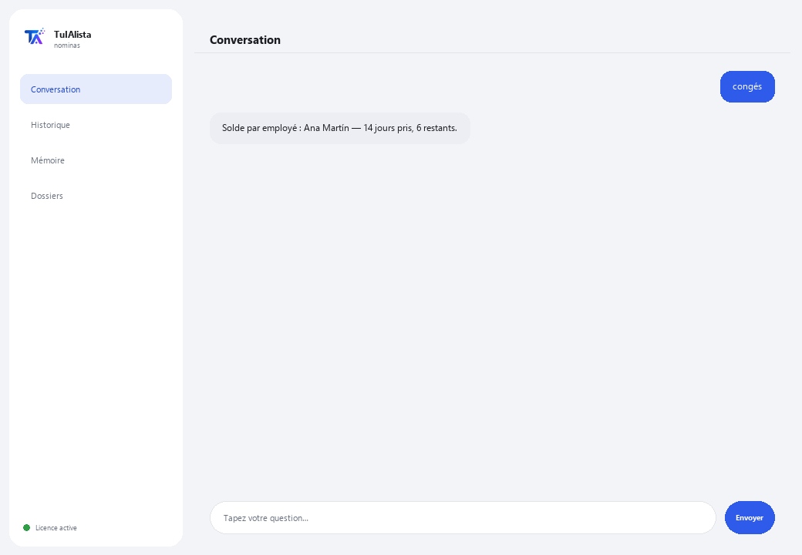

Agent Paie et Ressources humaines
Organise votre effectif, calcule les congés selon la loi du travail applicable et surveille les dates RH critiques — sans que les données quittent votre appareil.
Que résout-il et de quoi avez-vous besoin ?
Les données des employés sont ultra-sensibles et ne peuvent pas circuler dans le cloud. Cet agent les traite à 100 % sur votre machine : il charge votre effectif, calcule le solde de congés selon la loi du travail applicable et vous avertit des dates critiques (fin de contrats, anniversaires) avant qu'elles ne vous échappent.
- Vous avez besoin de : votre clé de licence (TIA-XXXX-XXXX-XXXX-XXXX) et de votre effectif en Excel ou CSV. Ni Python ni connaissances techniques.
- Premier résultat en moins de 5 minutes : vous installez, activez, choisissez votre dossier et lancez congés pour voir le solde de chaque employé.
- Les données de vos employés ne quittent jamais votre ordinateur — le calcul s'exécute localement.
soporte@tuialista.com ou visitez tuialista.com/soporte — nous répondons généralement le jour même.1 Ce que fait cet agent
Vous lui indiquez le dossier contenant votre effectif (en Excel ou CSV) et il :
- Charge les données des employés en détectant automatiquement les colonnes (nom, poste, salaire, date d'embauche, type de contrat...), même avec des noms différents.
- Calcule le solde de congés selon la loi du travail applicable (réforme “congés dignes” 2023).
- Vous avertit des dates critiques : fin de contrats et anniversaires professionnels à venir.
- Génère un résumé de paie (total, moyenne, par département et type de contrat).
- Liste les anniversaires à venir pour les reconnaissances.
- Alerte sur les contrats bientôt expirés.
- Génère un rapport d'effectif (embauches, départs, effectif par service).
- Répond à des questions RH avec un contexte anonymisé.
Résultat : un service RH organisé, avec les dates sous contrôle et les données toujours chez vous.
2 Installation (2 minutes)
Pour Windows. Pas besoin d'internet permanent ni de rien envoyer sur le cloud.
Téléchargez l'installateur depuis tuialista.com/descargar (agent Paie) et ouvrez-le. Il crée un raccourci sur votre bureau avec le logo — pas besoin de Python ni de terminal.
Double-cliquez sur la nouvelle icône. Collez votre clé de licence (reçue par e-mail à l'achat) et cliquez sur Activer. Une coche verte apparaît quand elle est valide.
Sélectionnez le dossier contenant votre effectif et cliquez sur Commencer à utiliser l'agent. La prochaine fois, il démarre directement — il se souvient de votre clé et de votre dossier.
3 Comment l'utiliser
L'agent ouvre une fenêtre de discussion, comme une app de messagerie — pas un écran noir de programmeur. Vous écrivez votre commande ou votre question dans le champ de texte en bas, cliquez sur Envoyer (ou Entrée), et la réponse apparaît comme un message, exactement comme sur cette image réelle :

Les commandes suivantes sont les mots que vous pouvez écrire dans ce même champ de texte :
> congésPar employé : son ancienneté, les jours de congés qui lui reviennent (barème légal avec la réforme 2023), ceux pris et ceux restants.
> dates [jours]Événements RH des N prochains jours (30 par défaut) : fin de contrats et anniversaires professionnels, classés par urgence. Ex. : dates 45.
> paieTotal de la paie, salaire moyen, maximum et minimum, et répartition par département et type de contrat — sans exposer inutilement de données individuelles sensibles.
> anniversaires [jours]Employés qui fêtent leur anniversaire professionnel dans les N prochains jours (60 par défaut).
> contrats [jours]Contrats temporaires expirant dans les N prochains jours (45 par défaut), y compris les récemment expirés.
> effectifTotal de l'effectif, actifs, départs, embauches de l'année, et répartition par département et type de contrat.
> question libre ?Écrivez toute question en langage naturel, ex. : combien d'employés fêtent 5 ans d'ancienneté ce trimestre ?
> quitterTermine la session (fonctionne aussi avec exit).
Vous voulez voir les 20 recettes complètes avec un exemple réel de chacune ? Consultez le Catalogue de recettes — un document à part vu sa longueur : catalogo_recetas.pdf à côté de ce manuel, ou la version interactive sur tuialista.com/guia/nominas/recetas.
4 Exemples d'usage courant
Révision mensuelle RH
dates 30 → contrats 45
Préparer les congés de l'année
congés
Rapport pour la direction
paie → effectif
Une requête ponctuelle
qui fête son anniversaire professionnel le mois prochain ?
5 Questions fréquentes
Les données de mes employés sont-elles envoyées sur internet ?
Quels formats accepte-t-il ?
Dois-je nommer les colonnes d'une façon exacte ?
Comment calcule-t-il les congés ?
Le calcul des congés a-t-il une valeur légale contraignante ?
Expose-t-il les salaires individuels ?
Dans quelle langue répond-il ?
Modifie-t-il mon fichier d'employés ?
J'ai mis à jour l'effectif, en tient-il compte ?
Puis-je avoir plusieurs fichiers ?
6 Résolution de problèmes
Ne charge pas les employés / affiche “0 employés”
Une colonne est mal détectée
Les calculs de congés ne correspondent pas à ce qui est attendu
Affiche “Licence invalide” ou demande de se reconnecter
“Aucun fournisseur d'IA configuré”
Aucune de ces solutions n'a résolu votre problème ? Écrivez-nous directement — nous serons ravis de l'examiner avec vous.
soporte@tuialista.com ou visitez tuialista.com/soporte — nous répondons généralement le jour même.7 Confidentialité
Les données de vos employés ne quittent jamais votre ordinateur.
- L'agent charge et traite l'effectif localement, sur votre propre appareil. Il n'envoie aucune donnée d'employé à un serveur.
- Le calcul des congés, les rapports de paie, les dates critiques et l'effectif sont calculés sur votre machine.
- La seule chose qui transite par internet est : (1) une vérification que votre licence est active — qui n'inclut pas les données d'employés —, et (2) lors d'une question libre, un contexte anonymisé (résumés agrégés, sans exposer les salaires individuels par défaut) est envoyé au moteur d'IA pour rédiger la réponse.